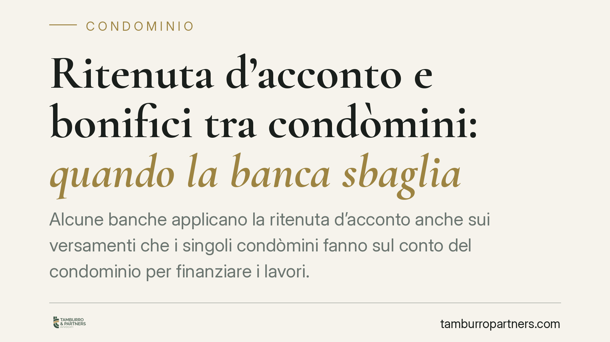

Ritenuta d'acconto e bonifici tra condòmini: quando la banca sbaglia
Alcune banche applicano la ritenuta d'acconto anche sui versamenti che i singoli condòmini fanno sul conto del condominio per finanziare i lavori. Una recente pronuncia di merito ha chiarito che questa trattenuta è indebita: la ritenuta colpisce solo i pagamenti verso le imprese, non i movimenti interni. Le somme trattenute per errore vanno restituite.

Il caso
Quando un condominio avvia lavori di manutenzione o ristrutturazione, i condòmini versano le proprie quote sul conto corrente condominiale. Sarà poi l'amministratore, con bonifico, a pagare l'impresa appaltatrice.
Su quest'ultimo bonifico la legge impone alla banca una trattenuta a titolo di ritenuta d'acconto. Il problema nasce quando l'istituto applica la ritenuta anche ai versamenti dei singoli condòmini, cioè a un flusso di denaro che resta interno al condominio.
Una recente pronuncia di merito ha affrontato proprio questo punto, stabilendo che la trattenuta sui versamenti interni è priva di base normativa e va restituita.
> Avvertenza. Si tratta di una decisione di primo grado, non vincolante per altri giudici. Indica un orientamento, non una regola consolidata. In assenza di verifica puntuale, gli estremi della sentenza non vengono qui riportati per prudenza.
Inquadramento normativo
La norma di riferimento è l'art. 25 del D.L. 78/2010, convertito con L. 122/2010. La disposizione prevede che, sui bonifici disposti dai condomìni a favore di imprese per prestazioni relative a contratti di appalto d'opera o servizi, la banca operi una ritenuta d'acconto sull'imposta dovuta dall'impresa beneficiaria.
L'aliquota, originariamente fissata al 10% e poi al 4%, è oggi pari all'8%, misura stabilita dall'art. 1, comma 657, della L. 190/2014 (Legge di stabilità 2015).
Il presupposto è chiaro: la ritenuta scatta sul pagamento diretto all'impresa che esegue i lavori. È un meccanismo antievasione che intercetta il compenso dell'appaltatore alla fonte.
Flusso interno e flusso esterno
La distinzione è decisiva.
Il flusso interno è il versamento del singolo condòmino sul conto del condominio. Qui non c'è alcun pagamento a un'impresa: il denaro entra nella cassa comune per finanziare la spesa. Non esiste un compenso da assoggettare a ritenuta.
Il flusso esterno è invece il bonifico che l'amministratore dispone verso l'impresa appaltatrice. Solo su questo pagamento la ritenuta trova applicazione, perché solo qui si verifica il presupposto previsto dall'art. 25: un corrispettivo pagato a chi ha eseguito la prestazione.
Applicare la ritenuta al versamento del condòmino significa tassare un movimento che non è un compenso. È un errore che genera una trattenuta indebita.
Implicazioni pratiche
Per il condominio l'effetto è concreto: se la banca trattiene l'8% anche sui versamenti dei condòmini, la cassa comune si riduce ingiustamente e i conti non tornano al momento del pagamento dell'impresa.
Le somme trattenute per errore costituiscono un indebito. Il condominio può chiederne la restituzione all'istituto. Se la banca resiste, la via è quella dell'azione di ripetizione dell'indebito.
L'amministratore ha un ruolo centrale: è tenuto a controllare gli estratti conto e a rilevare eventuali trattenute anomale sui versamenti interni, distinguendole dalla ritenuta legittima sui pagamenti alle imprese.
Cosa fare in concreto
- Verificate gli estratti conto del condominio e individuate le trattenute applicate: distinguete quelle sui versamenti dei condòmini da quelle sui bonifici alle imprese.
- Segnalate per iscritto alla banca le ritenute applicate sui versamenti interni, chiedendone la restituzione con richiamo all'art. 25 D.L. 78/2010.
- Conservate la documentazione dei versamenti e dei pagamenti, tenendo separati i due flussi.
- Informate l'assemblea dell'importo eventualmente trattenuto in modo indebito e delle azioni intraprese per il recupero.
- In caso di rifiuto della banca, valutate l'azione di ripetizione dell'indebito: è opportuno un esame professionale della posizione prima di procedere.
Conclusione
La ritenuta d'acconto non è un prelievo generalizzato su ogni movimento del conto condominiale. Colpisce un fatto preciso: il pagamento all'impresa. Ogni trattenuta applicata al di fuori di questo presupposto è da considerarsi indebita e recuperabile. Trattandosi però di orientamento di merito, ogni valutazione va calibrata sul caso concreto.
Ogni condominio ha una storia a sé.
Se gestisci un'amministrazione e vuoi un confronto su una specifica questione condominiale, scrivi allo studio. Ti rispondiamo entro un giorno lavorativo.